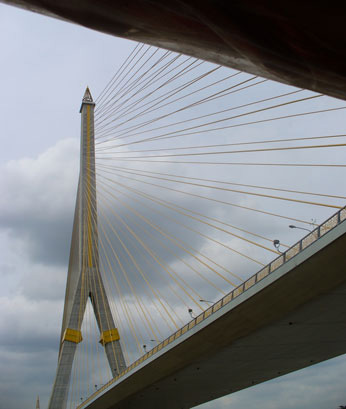

December 7, 2005
Hi Folks,
Here's what happened with my second run to get a visa for Myanmar.
Took the same path to the embassy as yesterday, shooting several more pictures on the Chao Phraya. Arrived at the visa section shortly after ten, and found the room filled with travel agents and other hopefuls. Mass Chaos.  Paper taped to the wall advised applicant to fill out two separate forms, paste passport photos on each, and submit with passport and funds depending on your urgency of receiving visa. The problem was you had to queue in line to submit, and that queue went down the center of the room with a line of chairs, across the room to three more rows of chairs, and then snaked around the far wall. Asking several folks milling about a desk in the corner, I found the end of the line. For the most part, travel agents seemed to be able to bypass the queue and go directly to a window. (Right: Pride of Bangkok, the Rama Eight bridge over the Chao Phraya River.)
By noon, the line had moved about 5 feet, and an employee went down the line, having each person fill in his name in numerical sequence on a piece of paper. My number was 37. Written on the top of the paper was "open 1 PM". This was in agreement with the sign outside that said visa section hours were 9 to 12 and 1 to 3.
Back at 1 PM, we assumed the same position in line, but it was clear eight or so had given up. At 3 PM, the same employee started another piece of paper. Written on top was "tomorrow, 9 AM." This time I was #20, with no reason to believe submittal would be possible tomorrow either, as it appeared only about 15 people actually made it to the window to submit applications. Now it is clear why there is a thriving business in Bangkok of travel agents obtaining visas for pretty hefty fees.
Time to think outside the box. Leaving the visa section, I head straight to the counselor office of the Embassy. The Guard asked what I wanted, and I said "talk to consular official." He queried, "Visa?", "No" was my reply. That got me in the door. The room was apparently used primarily for Myanmar citizens needing to get documents notarized. The gentleman behind the counter was unable to understand me, so another citizen came to my aid. I explained the situation next door, saying it is not characteristic of the wonderful things I had heard about the people of Myanmar. He chuckled, asked if I was a journalist, and said wait a few minutes. He made a few phone calls and finished his business. At 3:30 we went back to the visa section. In five minutes he gave me a receipt for my passport and paperwork. I thanked him profusely, and headed back to my guest house.
On the way was a tailor willing to replace the zipper on my waist sack for a mere $1.25. Now it is time to read up on Myanmar and find the best deal on flights.
Hope you are all enjoying life and having as much fun.
Bill
=================================
"Travel is Fatal to Bigotry, Prejudice, and Narrow-minded ness" ....
attributed to Mark Twain